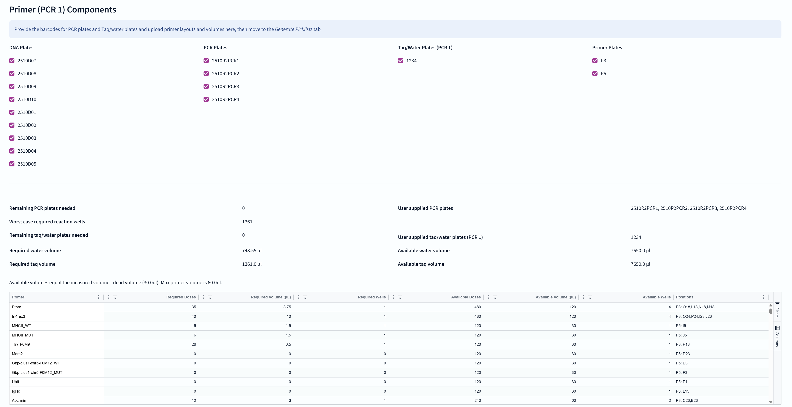
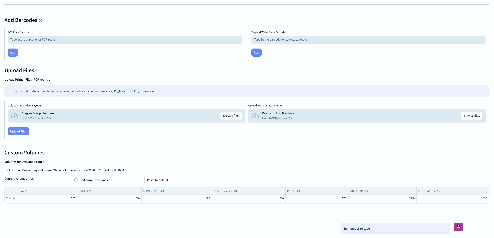
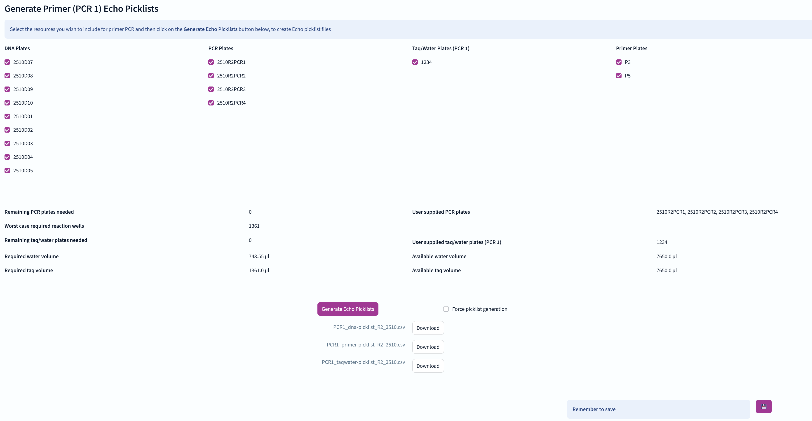

The third stage of the NGS genotyping pipeline involves performing primer PCR to amplify the target regions.
To achieve this, 384-well "Echo" plates are used to organize the samples for the PCR reaction.
Samples, taq polymerase, and water, and PCR primers, are added to the wells of the Echo plates.
For every combination of sample and assay, there will be at least one corresponding PCR well - usually several as different primer pairs will be used for each possible allele.

The components tab of the primer stage contains a table listing all the components used in the PCR reaction, including samples, taq polymerase, water, and PCR primers.
Users can see the quantities and details of each component, and enable/disable them using checkboxes.
This affects the summary table below the checkboxes, and the spreadsheet view of required and available primers.

Below the component information are widgets for adding PCR (Echo) plate barcodes, and Taq/water plate barcodes to the experiment.
Below that, there are upload widgets for primer layout and volume files.
Lastly, there is a widget for adjusting liquid transfer volumes with the Echo. Do not adjust these values unless instructed!
And don't forget to save your progress!
The Generate picklists tab has much of the same view as the Components tab, but here users can down-select from available plate options in order to generate Echo "picklists" for the primer PCR reactions.

After confirming that the selected components are correct and enabled with tickboxes, users can generate the picklists for the PCR reactions.
Any there are missing primers, they will be indicated in the summary table.
Ticking the "Force picklist generation" checkbox will override any warnings and generate the picklists regardless.
If any of the files to be generated already exist, the user will be prompted to confirm overwriting them.
Back to index